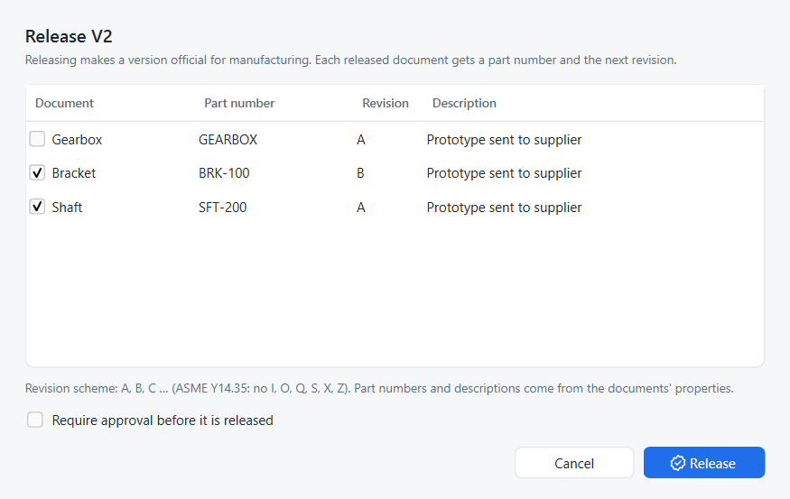
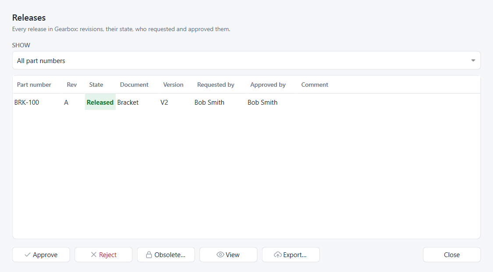

Release a design
Goal: release version V2 of the bracket and shaft for manufacturing, have the release approved, then revise the bracket.
This tutorial follows Onshape’s Release management help page: a release candidate is created from a version, goes through Pending, and ends Released or Rejected.
Before you start: part numbers
Give the documents part numbers first; Part numbers and properties shows how to do it for all documents at once. A release reads them from the document as it was at the released version, so set them before you create the version.
Release a version
-
Right-click the version in the graph and choose Release V2…, or select it and click Release in the details card.
-
Tick the documents to release. For each, check the part number and the revision.
-
Optionally edit the description.
-
Click Release.

The part number and description come from the document’s properties at that version, else from earlier releases of the same document. A document without a part number starts unticked. The revision is the next free one for that part number in the project’s revision scheme.
The version’s node in the graph now carries a green chip such as BRK-100 A.
Require approval
Tick Require approval before it is released. The button becomes Submit for approval and the revision is created as Pending, with an amber chip.
-
The approver opens Releases (Ctrl+Shift+R) and selects the pending row.
-
Approve makes it Released and records the approver’s name.
-
Reject asks for a reason, for example Hole pattern does not match drawing, and makes it Rejected.
Fix and resubmit a rejected revision
A rejected revision does not use up its letter.
-
Fix the design and create a new version, for example V2.1.
-
Release it. Strata proposes the same revision again, here A.
-
Submit it for approval as before.
The register keeps both attempts: the rejected one with its reason, and the new pending one. Only the newest attempt counts for the revision’s state.
The release register
Releases lists every part number and revision with its state, document, version, who requested and who approved it, and the comment given with the last state change.

Approve, Reject |
for pending revisions |
Obsolete… |
for a released revision that is no longer valid; see Revision history and obsolete revisions |
View |
opens the released document as a read-only copy |
Export… |
writes the released document as |
Releases are permanent: each state change is recorded separately and cannot be edited afterwards.
Choose a revision scheme
Open ⋯ › Settings… and pick a Revision scheme:
A, B, C … |
letters as in ASME Y14.35: I, O, Q, S, X and Z are skipped, and after Y comes AA (default) |
1, 2, 3 … |
numbers |

The scheme applies to the next revision of every part number in the project; existing revisions keep their labels.
Same thing in Python
# SPDX-License-Identifier: LGPL-2.1-or-later
"""Minimal working example: release a version, revise it, obsolete the old revision.
Run with FreeCAD's console (Strata installed):
freecadcmd releases.py [empty-folder]
"""
import os
import sys
import tempfile
import FreeCAD as App
from strata.project import Project
folder = next((a for a in sys.argv[1:] if not a.endswith(".py")), None) or tempfile.mkdtemp()
path = os.path.join(folder, "Shaft.FCStd")
doc = App.newDocument("Shaft")
shaft = doc.addObject("Part::Cylinder", "Shaft")
shaft.Radius, shaft.Height = 6, 80
doc.recompute()
doc.saveAs(path)
project = Project.create(folder, "Ada Lovelace", "ada@example.com")
v1 = project.create_version("V1", "Prototype")
# Release V1 as part number SFT-200; the revision letter is chosen automatically
rev_a = project.release(v1, "Shaft.FCStd", "SFT-200", description="Prototype")
print("Released %s rev %s (%s)" % (rev_a.part_number, rev_a.revision, rev_a.state))
# A design change, a new version, released through an approval step
shaft.Height = 95
doc.recompute()
doc.save()
project.record()
v2 = project.create_version("V2", "Longer shaft")
rev_b = project.release(v2, "Shaft.FCStd", "SFT-200", description="Longer shaft", approval=True)
print("Submitted %s rev %s (%s)" % (rev_b.part_number, rev_b.revision, rev_b.state))
project.set_release_state(rev_b, "Released") # approve
project.set_release_state(rev_a, "Obsolete") # retire the old revision
print("Release register:")
for r in project.releases():
print(" %-8s rev %-2s %-9s from %s (%s)" % (r.part_number, r.revision, r.state, r.version, r.description))
print("Next revision would be:", project.next_revision("SFT-200"))
App.closeDocument(doc.Name)
project.repo.close()freecadcmd releases.pyReleased SFT-200 rev A (Released)
Submitted SFT-200 rev B (Pending)
Release register:
SFT-200 rev A Obsolete from V1 (Prototype)
SFT-200 rev B Released from V2 (Longer shaft)
Next revision would be: C